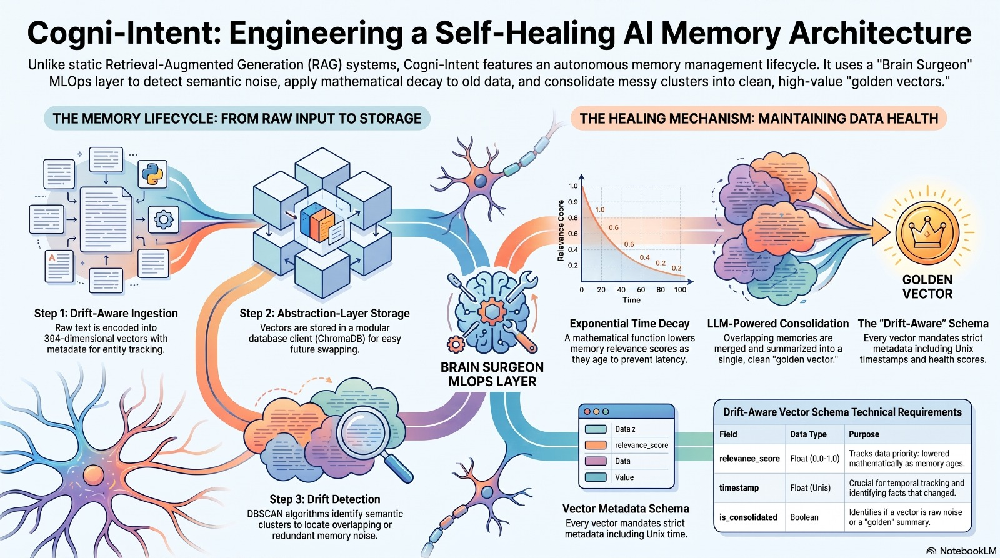

Known Challenges & Future Roadmap
An honest look at common memory problems in modern AI, how Cogni-Intent solves them, and what we are building next.
Figure 3: Common AI Memory Problems

1. Loss of Medical & Patient History
Basic AI systems simply delete old memories when cleaning up duplicates. This erases past medical history. A doctor or auditor can no longer check why a medicine was stopped or changed, creating serious medical and legal risks.
2. Silent Background Task Failures
Background memory cleanup tasks can quietly crash if servers get overloaded. Without continuous monitoring (MLOps telemetry), broken memories pile up unnoticed until the AI gives incorrect advice during an emergency.
3. Errors Multiplying Over Time
If an AI makes a false guess while combining memories, that false statement can get saved as a permanent fact. Over time, these mistakes build on top of each other, leading to completely wrong answers.
4. Clustering Limits in High Dimensions
Traditional grouping methods (like DBSCAN) struggle when comparing text represented by hundreds of numbers. They either group unrelated memories together or miss contradictions entirely.
Cogni-Intent Development Roadmap
Foundation Prototype
- • ChromaDB Vector Storage
- • UMAP 2D Map Display
- • HDBSCAN Topic Grouping
- • Basic Safe Archiving Flag
Current Live System
- • Cross-Encoder NLI Conflict Checking
- • Complete Memory History Tree (DAG)
- • Interactive Test Lab & Doctor Chat
- • 100% Client-Side Web Deployment
Future Enhancements
- • Knowledge Graph Multi-Step Search
- • Shared Immune Network Across Multiple Agents
- • Real-Time Streaming Memory Cleanup
- • Cryptographic Audit Security